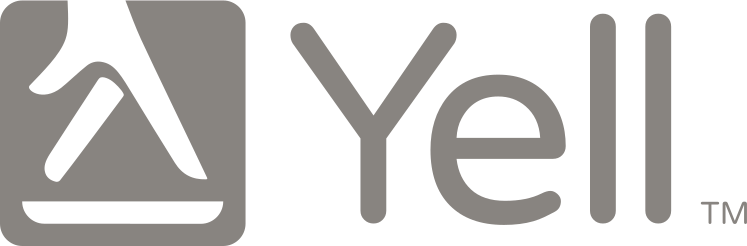

Graham
Beale
A Design and Product leader with a strong focus on Human-centred AI.
Background
Senior design and product leader with over twenty years of experience across media, finance, enterprise software and marketplace platforms. There is a pattern to his career: he arrives, spots a problem the organisation is not quite ready to tackle, builds the evidence, and creates the infrastructure in teams, culture and product that makes good work possible.
His thinking on AI comes from doing it. At Mimecast he reshaped the design function into a guild, coached the team to use AI tools daily and brought in engineering leaders to run Cursor training. He is looking for a leadership role where design and product work as one.
Career history
-
Design & Research Director → User Experience Director Oct 2020 — Present
— Cybersecurity SaaS
Joined as Design and Research Director and grew to UX Director over five years. Built three practices from the ground up: a user research function embedded across product squads, an accessibility practice aligned to ISO 30071-1, and Mimecast Elements, a design system that became the shared standard across the portfolio. When Mimecast moved to an AI-first operating model, restructured the team as a guild, with designers and engineers sharing tools and skills daily.
-
Lead UX/UI Design Instructor Jun 2019 — Sep 2020
— Global Technology Bootcamp
Led a six-month UX/UI bootcamp as senior instructor, teaching and coaching over 300 students through a significant career change. Graduates have gone on to design roles at Sky, British Airways, Oracle, Starling Bank, HMRC and the Home Office.
-
Head of User Experience Design May 2015 — Jun 2019

— Digital MarketplaceLed UX across three cross-functional product teams during Yell's shift from directory to marketplace. With consumer NPS at -1 and Google eroding organic search, led the research and validation of a two-sided marketplace built on trust signals and co-created quoting. The business built it, took it from beta to scale in nine months, and reached a touchpoint NPS of 47.
-
Senior Manager, User Experience Dec 2013 — Apr 2015
— Financial Services
Joined the innovation team to lead experience design for PayM and Zapp, two new payment systems integrated into the Nationwide app. In a strict waterfall environment with a divided design organisation, started a voluntary Lightning Talks programme that drew 20 to 30 people from across the business and built the cross-functional trust that made delivery possible. Both systems launched at full customer scale.
-
Head of User Experience Oct 2012 — Dec 2013
Everyclick — Charitable Giving
Led UX for a startup directing a share of affiliate marketing revenue from everyday online shopping to charitable causes. The most significant project was a marketplace developed with Age UK, connecting older consumers with relevant products and services while generating charitable income.
-
Principal Information Architect Apr 2012 — Oct 2012
— Global Telecommunications
Brought in to lead the evolution of Vodafone's UK online presence, taking over from an external contractor team. Led design on NewCo, a strategic digital platform built in partnership with Hewlett Packard.
-
User Experience Team Manager Apr 2009 — Apr 2012
— Enterprise Cybersecurity
Led UX for a pilot mobile app giving enterprise email administrators the ability to manage critical security tasks away from their desks. Customer feedback led directly to an iPad version the following year. The work was recognised with the Symantec CEO Applause Award in FY11 and FY12.
-
Senior Interaction Designer Oct 2007 — Apr 2009
— Global Digital Media
Led experience design for Yahoo! Finance's currencies section across European and US markets, at the time the most widely used financial website in the world. Research revealed that many European travellers had no idea what currency was used at their destination. The result was a location-first converter that let users search by country, city or resort name rather than currency code. Every competitor used a dropdown list. This was the first tool to start from where users actually were.
-
Interaction Designer May 2002 — Oct 2007
— Radio, Innovation & News
Five years across three internal roles: Radio and Music Interactive, Innovation and Research, and BBC News. Partnered with Flow Interactive to bring user-centred design into the Radio and Music department, one of the first teams at the BBC to work this way. Early concepts for BBC content aggregation pages were later developed into BBC Topic.
-
Web Designer Jun 1999 — Nov 2001
— National Newspaper
Part of the team behind the redesign of one of the UK's first newspaper websites, repositioning the brand from Electronic Telegraph to telegraph.co.uk.
Selected work
Case studies covering Mimecast Elements (design system), the Yell marketplace, Nationwide PayM, and other selected projects are available on request.
Get in touch
Open to conversations about VP-level design and product leadership opportunities, advisory roles, and collaborations where design thinking can make a genuine difference.